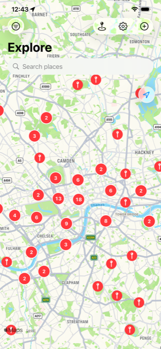
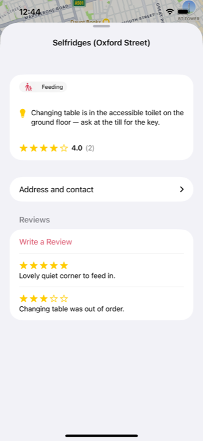
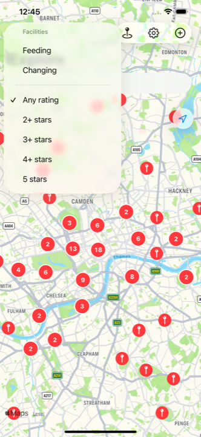

MamaLama
A map of places in London where you can feed or change a baby without a fight.
Get in touch
Questions, a bug, a place that has closed or changed hands, or something you have seen in the app that should not be there — write to robin.elrharbifleury@gmail.com.
In the app it is the same thing: Settings → Contact Us. Reports made in the app are acted on within 24 hours.
If you are writing about a bug, saying which iPhone and which iOS version you are on saves a round trip.
Common questions
The map is empty where I live.
Every place in MamaLama is in London — about 150 of them, put together by hand. Outside London the map will be empty. That is the app as it stands, not a fault, and it is said plainly on the App Store listing too.
A place has no reviews.
The places are on the map from the moment you open it; the reviews fill in as parents write them. Tap a place and you can be the first.
I wrote a review and cannot see it.
Every review and every suggested place is read by a moderator before anyone else can see it, so it will not appear straight away. That is deliberate. Usually within 24 hours.
How do I delete what I have written?
Settings → Delete my reviews removes every review you have written, whenever you like. To have anything else removed, email the address above.
Someone wrote something they should not have.
Report the review from the place's page and it is hidden from you at once, with a moderator on it within 24 hours. You can also block a contributor so you never see their reviews again — that block is kept on your phone only, so it goes if you reinstall.
A place is missing.
Suggest a place from the map. Find it, tick what it has, and leave the one practical thing you wish someone had told you before you went — which floor the changing table is on, that you have to ask at the till, that it is hopeless at lunchtime. A moderator checks it before it goes on the map.
Why does it not sort by what is nearest?
It does not open on you and it does not sort by distance. Share your location and you get a blue dot so you can see where you are standing; you move the map yourself. Your location is never stored or sent anywhere.
Do I need an account?
There is no MamaLama account. Reading the map works signed out. Writing a review or suggesting a place uses the iCloud account already on your phone, so a moderator has something to act on.
What it looks like


